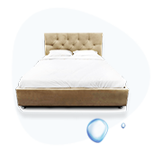

Улучшите свое здоровье и самочувствие членов вашей семьи с помощью комплексной системы подготовки питьевой воды Biontech 6 в 1
С системой Biontech вы и ваши родные каждый день пьете чистую, полезную и вкусную воду
Установите систему Biontech и наслаждайтесь полезной водой ближайшие десятилетия
Производитель Южная Корея
Небольшие габариты и вес
7 ступеней очистки
Сенсорная система управления
От 5 до 8 режимов регулирования уровня ph
Система комплексной подготовки воды Biontech это
Чистая и вкусная вода
Системы Biontech подключаются напрямую к водопроводу и за счет 7-ступенчатой очистки на выходе дают чистую и вкусную водуПодробнее о пользе
Вода богатая минералами (Ca,Mg,Na)
Общая минерализация питьевой воды необходима, чтобы организм получал полезные минералы.Подробнее о пользе
Щелочная вода
Это вода с показателем pH вышe 7. Нужна при похудении, занятиях спортом, болезнях ЖКТ, сахарном диабете, сердечно-сосудистых заболеваниях. Для профилактики онкологии.Подробнее о пользе
Водородная вода
Это вода, которая обогащена водородом H2. Водородная вода замедляет процессы старения, повышает сопротивляемость организма вирусам и бактериям, защищает кожу от солнечных лучей.Подробнее о пользе
Вода с антибактериальными свойствами
Вода Biontech обладает дезинфицирующими свойствами. Она убивает вредные бактерии и вирусы,помогает быстрее выздороветь при простудах и вирусных заболеваниях.Подробнее о пользе
Структурированная вода
Структурированная вода быстрее доставляет клеткам питательные вещества, выводит шлаки и токсины, активизирует обмен веществ и способствует омоложению организма.Подробнее о пользе
Ионизированная вода
Система повышает уровень заряда воды до -500 мВ и насыщает воду ионами кальция. Ионизированная вода нормализует процессы жизнедеятельности организма и продлевает молодость.Подробнее о пользе
Посмотрите тестирование на уровень рН бутилированной, отфильтрованной, водопроводной воды и воды Biontech
Для щелочной воды характерен уровень pH от 7,5 до 10,0. Проверяем уровень рH разной воды индикатором
Смотрите в видео:
0:00Какая вода взята для теста
0:00Какая вода взята для теста
0:00Какая вода взята для теста
0:00Какая вода взята для теста
0:00Какая вода взята для теста
0:00Какая вода взята для теста
0:00Какая вода взята для теста
0:00Какая вода взята для теста
0:00Какая вода взята для теста
0:00Какая вода взята для теста
Смотрите другие видео о воде Biontech
Врачи о пользе щелочной и ионизированной воды
Доктор наук Хаяси Хидемитсу, кардиохирург, директор японского института воды
«Мои гипотезы возникли на основании клинических наблюдений в нашей больнице. С мая 1985 года у нас зарегистрированы тысячи подтверждённых случаев улучшения здоровья, которые произошли только благодаря замене водопроводной воды на щелочную, как для питья, так и для приготовления пищи.»
«Ионизаторы воды для производства структурированной воды начали применятся в нашей клинике в мае 1985 года. На основании наблюдений, которые я с тех пор веду, я утверждаю, что употребление натуральной восстановленной воды для питья и приготовления пищи для пациентов, должно стать одним из условий лечения во всех медицинских учреждениях. Никакой план питания не может быть научно правильным, если не берётся во внимание потребляемая пациентами питьевая вода.»
Доктор наук 2, кардиохирург, директор японского института воды
«Мои гипотезы возникли на основании клинических наблюдений в нашей больнице. С мая 1985 года у нас зарегистрированы тысячи подтверждённых случаев улучшения здоровья, которые произошли только благодаря замене водопроводной воды на щелочную, как для питья, так и для приготовления пищи.»
«Ионизаторы воды для производства структурированной воды начали применятся в нашей клинике в мае 1985 года. На основании наблюдений, которые я с тех пор веду, я утверждаю, что употребление натуральной восстановленной воды для питья и приготовления пищи для пациентов, должно стать одним из условий лечения во всех медицинских учреждениях. Никакой план питания не может быть научно правильным, если не берётся во внимание потребляемая пациентами питьевая вода.»
Говорят покупатели системы комплексной подготовки питьевой воды Biontech 6 в 1
Отзыв Евгения Матусевича, семья которого пьет воду в течение года
Отзыв 2, семья которого пьет воду в течение года
Отзыв 3, семья которого пьет воду в течение года
Отзыв 4, семья которого пьет воду в течение года
Отзыв 5, семья которого пьет воду в течение года
Отзыв 6, семья которого пьет воду в течение года
Отзыв 7, семья которого пьет воду в течение года
Вода из системы Biontech позволит вам и членам вашей семьи
Вести здоровый образ жизни
Тело взрослого человека более чем на 70% состоит из воды. Кровь – важнейшая жидкость организма – имеет слабощелочной pH 7,36-7,44. Лимфа и большинство тканей также имеют щелочной pH. Однако рацион современного человека состоит в основном из продуктов, создающих кислую среду. Это ведет к нарушению pH-баланса и обмена веществ – окислению организма. Этот эффект усиливает агрессивная окружающая среда, токсичные загрязнения, вредные привычки и другие факторы.Чтобы поддерживать естественный pH-баланс, человеку необходимо регулярно пить щелочную воду, которая нормализует окислительно-восстановительные процессы в организме.
Сократить количество заболеваниий в семье
Щелочная ионизированная вода – это важнейший элемент здорового образа жизни современного человека. Она быстро нормализует водный баланс в организме, является мощным антиоксидантом, способствует очищению и детоксикации, нормализует обмен веществ, укрепляет иммунитет и препятствует старению, уменьшая окислительные процессы. Многие врачи в мире применяют щелочную ионизированную воду как натуральное средство, способствующее оздоровлению и профилактике заболевани. Клинические тесты демонстрируют великолепные результаты в отношении целого ряда патологии.
Выглядеть красивыми в любом возрасте
Заботясь о красоте нашей кожи, мы стремимся приобрести качественные натуральные средства ухода, принимаем витамины, посещаем процедуры косметологов и прилагаем прочие усилия, чтобы как можно дольше сохранить молодость и привлекательную внешность. Однако самым важным фактором достижения успеха по-прежнему является вода, которую мы используем каждый день. Именно от воды наиболее всего зависит то, как мы будем выглядеть через месяц, через год, через десять лет.
Добиваться быстрее результатов в спорте
Как в спорте высоких достижений, так и в фитнесе результат в значительной степени зависит от соблюдения правильного водного режима. При этом имеет большое значение, какую именно воду вы пьете. Ионизированная щелочная вода от компании Dr.Water, благодаря своим свойствам, изменит ваше представление о том, каким должен быть по-настоящему эффективный спортивный напиток. Специалисты спортивной медицины рекомендуют пить не менее 2-3 литров воды ежедневно. Это количество воды поддерживает оптимальный водный баланс, компенсирует потери жидкости во время тренировок и обеспечивает нормальный вывод воды из организма.
Питаться вкусной и здоровой едой
В современном мире человеку трудно обеспечить себе здоровое питание. Большинство продуктов и напитков имеют кислотный pH. Технологии выращивания овощей, производства мяса, птицы и рыбы включают использование множества синтетических добавок, консервантов и других веществ, которые наносят вред нашему здоровью. Если вы регулярно пьете щелочную ионизированную воду, это помогает восстановить кислотно-щелочной баланс организма. Однако использование ионизированной воды также является великолепным способом сделать саму нашу пищу более натуральной, здоровой, полезной и вкусной!
Вырастить здоровых малышей
Ухаживая за грудными детьми, каждая мама стремится использовать только натуральные средства, не содержащие химических компонентов, которые могли бы навредить здоровью. Ионизированная вода – это, пожалуй, самое безопасное натуральное средство, которое поможет вашему ребенку иметь крепкое здоровье и хорошее настроение. Вода с pH 8,5 оптимальна для приготовления молочных смесей для детей грудного возраста. По медицинской статистике дети, которые пьют материнское молоко, менее подвержены заболеваниям, чем дети на искусственном вскармливании.

Создать безопасную среду в доме
Кислотная вода с низким уровнем pH (4,0 и менее) имеет сильные дезинфицирующие свойства и предотвращает распространение таких вирусов, как стафилококк, стрептококк, кандида, грибок стопы, палочки, сальмонеллы, ВИЧ и другие в течение 30 секунд. Применяется для дезинфекции кухонных принадлежностей, посуды, предметов личной гигиены путем замачивания на 20-30 минут. Эффективно удаляет налет и загрязнения. Идеальная уборка без химикатов! С помощью кислотной воды с pH 4,0 и ниже, можно эффективно удалить накипь без использования кислотных химикатов. Легко устраняет налет с поверхности чашек и чайных ложек. Вода с pH 4,5 также используется в увлажнителях воздуха.
Отзывы людей, которые постоянно поьют полезную воду
Волков СергейОснователь группы компаний "Невские весы", г. Санкт-Петербург
Результат от употребления щелочной монизированой воды
«Я занимаюсь бизнесом 30 лет и в какой-то момент дошел до ручки. 9 лет назад у меня обнаружили онкологическое заболевание. И мне мой врач рекомендовал щелочную воду. Я очень много чего предпринимал при лечении, но вода была как одно из успешных действий. Заболевание сейчас прошло, в не активном состоянии. И сейчас, прошло 9 лет, а я чувствую себя гораздо лучше, чем тогда. По физическим данным — по активности, по энергетике, по всему — состояние молодого духа тела. Мне сейчас 59 лет, а я чувствую себя на 36. И одна из причин — то, что я пью эту щелочную воду. Я много слушал специалистов, врачей, почему появляется онкологическое заболевание — и они говорили: болезнь появляется, когда идет закисление организма. Поэтому его нужно защелачивать. А в этой воде высокий pH — она щелочная. Об этом все врачи говорят. Поэтому я стал ее принимать. Я и сейчас активно пью данную воду, абсолютно счастлив. Для профилактики это очень круто и очень важно — правильное питье».
Волков СергейОснователь группы компаний "Невские весы", г. Санкт-Петербург
Результат от употребления щелочной монизированой воды
«Я занимаюсь бизнесом 30 лет и в какой-то момент дошел до ручки. 9 лет назад у меня обнаружили онкологическое заболевание. И мне мой врач рекомендовал щелочную воду. Я очень много чего предпринимал при лечении, но вода была как одно из успешных действий. Заболевание сейчас прошло, в не активном состоянии. И сейчас, прошло 9 лет, а я чувствую себя гораздо лучше, чем тогда. По физическим данным — по активности, по энергетике, по всему — состояние молодого духа тела. Мне сейчас 59 лет, а я чувствую себя на 36. И одна из причин — то, что я пью эту щелочную воду. Я много слушал специалистов, врачей, почему появляется онкологическое заболевание — и они говорили: болезнь появляется, когда идет закисление организма. Поэтому его нужно защелачивать. А в этой воде высокий pH — она щелочная. Об этом все врачи говорят. Поэтому я стал ее принимать. Я и сейчас активно пью данную воду, абсолютно счастлив. Для профилактики это очень круто и очень важно — правильное питье».
Волков СергейОснователь группы компаний "Невские весы", г. Санкт-Петербург
Результат от употребления щелочной монизированой воды
«Я занимаюсь бизнесом 30 лет и в какой-то момент дошел до ручки. 9 лет назад у меня обнаружили онкологическое заболевание. И мне мой врач рекомендовал щелочную воду. Я очень много чего предпринимал при лечении, но вода была как одно из успешных действий. Заболевание сейчас прошло, в не активном состоянии. И сейчас, прошло 9 лет, а я чувствую себя гораздо лучше, чем тогда. По физическим данным — по активности, по энергетике, по всему — состояние молодого духа тела. Мне сейчас 59 лет, а я чувствую себя на 36. И одна из причин — то, что я пью эту щелочную воду. Я много слушал специалистов, врачей, почему появляется онкологическое заболевание — и они говорили: болезнь появляется, когда идет закисление организма. Поэтому его нужно защелачивать. А в этой воде высокий pH — она щелочная. Об этом все врачи говорят. Поэтому я стал ее принимать. Я и сейчас активно пью данную воду, абсолютно счастлив. Для профилактики это очень круто и очень важно — правильное питье».
О компании производителе Biontech
Компания Biontech была основана в 1986 году
Сегодня компания является лидером по производству систем ионизации воды на азиатском и европейском рынках
Высокое качество продукции компании Biontech подтверждено международными сертификатами
Системы Biontech получили одобрение Министерств здравоохранения Японии и Южной Кореи и рекомендованы для домашнего и профессионального использования
Компания контролирует все процессы производства, начиная от дизайна, производства, упаковки и до установки оборудования
50 авторизованных сервисных центров по всему миру
Российские и международные сертификаты системы Biontech
Сертификат исследования систем Biontech Исследовательским институтом Южной Кореи
Сертификат на право производства систем Biontech, выданный Министерством Южной Кореи
Системы Biontech прошли сертификацию в Северной Америке и Канаде
Сертификат подтверждает, что производитель работает по Системе Качества Менеджмента ISO 9001
Данные тестов проверки воды Biontech Исследовательским институтом Южной Кореи
Как приобрести систему комплексной подготовки воды Biontech
У наших партнеров
Вы можете купить систему Biontech у ближайшего к вам продавца в вашем городе
На нашем сайте
Несколько модификаций систем Biontech и более 100 других полезных для здоровья товаров доступны на сайте прямо сейчас
В нашем магазине
Адрес магазина: Санкт-Петербург, Невский пр.,35. Большой Гостиный Двор, 1 этаж, (Перинная линия).
{kind=link}